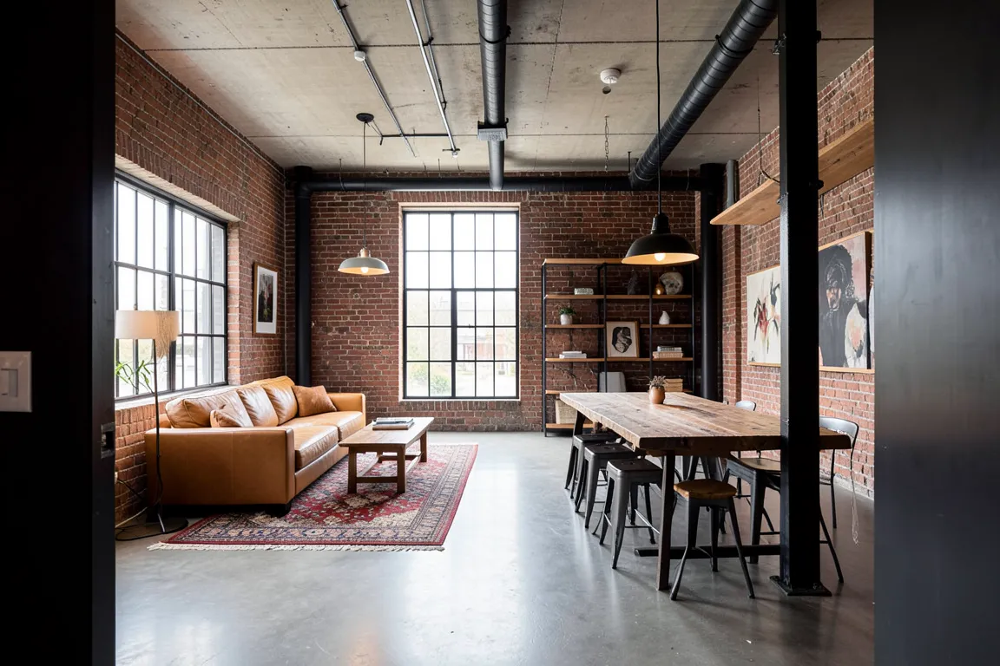

Det ombygde fabrikkgulvet. Åpen teglstein, betong, stålsøyler og kanaler blir stående i syne; store stålvinduer lyser opp én åpen plan, og gjenbrukte møbler av tre, lær og stål står i soner på et bart gulv.

Kjerneidé
Bygget forteller om fortiden som fabrikk; la konstruksjonen og tekniske anlegg stå i syne og bo blant dem.
Designprinsipper
Vis konstruksjonen og de tekniske anleggene: tegl, betong, søyler, bjelker, kanaler og rør.
Hold én åpen plan; marker soner med tepper og møbler, ikke vegger.
Bruk store stålrammede vinduer og la dem stå bare.
Bland rå materialer med varme: stål og betong med gammelt tre og slitt lær.
Velg gjenbrukte eller fabrikkstykker: metallkrakker, skap, pendellamper.
Hold paletten i materialenes farger: teglrød, betonggrå, svart stål og trebrun.